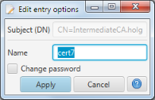

Edit Entry Options
This dialog supports changing various options of the selected store entry after it has been created.

The alias of the store entry can be changed and hence the file names used to store the different certificate objects.
The current files will be renamed accordingly as soon as the changes made in this dialog are applied.
Checking "Change password" will request a password change on applying the changes made in this dialog. This option
is only available for store entries with a (password protected) key. A password
prompt will be displayed to ask for the existing password and a new password
prompt will be displayed to enter the new password.